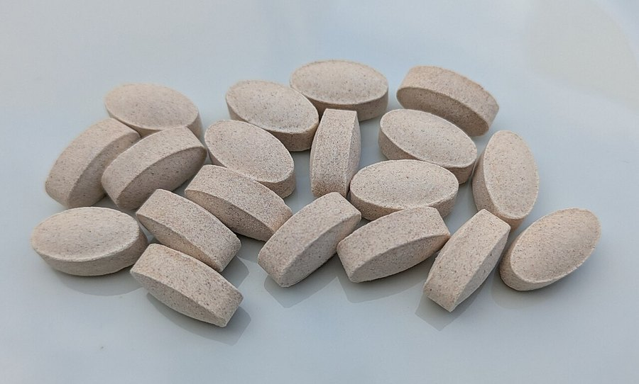

Glucosamine Linked to Faster Alzheimer's Progression, New Study Finds
A widely used joint supplement is now the subject of a new dementia-progression study. Here's what researchers found, and why it doesn't settle the question.

Key takeaways
- A University of Florida study, published in Nature Metabolism, found glucosamine use was associated with a 25% higher likelihood of progressing from mild cognitive impairment to dementia.
- The analysis reviewed nearly a decade of deidentified patient records using AI, it was not a randomized clinical trial.
- Researchers proposed a mechanism: glucosamine can cross the blood-brain barrier and may worsen an already disrupted metabolic pathway, based on supporting imaging and mouse-model data.
- This finding conflicts with earlier research, including UK Biobank studies that linked glucosamine with lower dementia risk in the general population.
- Don't stop a supplement based on one study. Talk to a doctor, especially if you already have a diagnosis of mild cognitive impairment or dementia.
A new study is raising questions about glucosamine, one of the most widely used over-the-counter joint supplements, and its relationship to Alzheimer's disease. Researchers at the University of Florida found that people already diagnosed with mild cognitive impairment who took glucosamine were more likely to progress to dementia than those who didn't.
That's a meaningful finding worth taking seriously. It is not the same as proof that glucosamine causes Alzheimer's, and it sits alongside older research pointing in the opposite direction.
What did the researchers actually find?
The team used artificial intelligence to review nearly a decade of deidentified patient records from UF Health, covering people diagnosed with either mild cognitive impairment or Alzheimer's disease and related dementias between 2012 and 2024. Roughly 8% of patients in both groups reported taking glucosamine, a supplement millions of people use for joint pain and osteoarthritis.
After adjusting for age, sex and other demographic factors, glucosamine use was associated with a 25% higher likelihood of progressing from mild cognitive impairment to dementia. The researchers published their findings in Nature Metabolism.
What's the proposed mechanism?
Alongside the records analysis, the researchers examined brain imaging and used mouse models of Alzheimer's disease to look for a biological explanation. Glucosamine is a sugar-related molecule that can cross the blood-brain barrier, and the researchers propose that in a brain already showing signs of Alzheimer's-related metabolic disruption, added glucosamine may worsen that dysfunction rather than simply being inert.
That's a biologically plausible story, not a confirmed mechanism. Mouse models and imaging data can support a hypothesis. They don't prove how the same process plays out in a living human brain over years.
COMPLEX
The memory formula we rate highest in 2026
One formula combined a fully transparent, clinically-dosed label — citicoline, bacopa, phosphatidylserine and B-vitamins — with a 60-day guarantee.
See Today's Price →Does this contradict earlier research?
Yes, at least partly, and that's worth being upfront about. Several earlier studies using UK Biobank data, a large, long-running health database, found the opposite pattern in the general population: regular glucosamine use was associated with a lower risk of all-cause dementia and vascular dementia, with mixed results specifically for Alzheimer's disease. Those studies looked at healthy adults developing dementia over time, a different question from whether glucosamine speeds decline in people who already have mild cognitive impairment, which is what the new UF study examined.
Put together, the honest summary is that the evidence on glucosamine and brain health is genuinely mixed right now, not settled in either direction. A single new study, even a well-designed one, rarely overturns an entire body of prior research on its own.
How strong is this kind of evidence?
This was a retrospective analysis of existing medical records, not a randomized controlled trial where researchers assign people to take glucosamine or a placebo and follow them forward. Records-based studies like this one are useful for spotting patterns worth investigating further, but they carry a familiar limitation: people who take glucosamine may differ from those who don't in other ways, more joint pain, different activity levels, other health conditions, that could also affect dementia risk. Researchers adjust for what they can measure, but not every difference between groups is captured in a medical record.
This is a pattern that shows up across a lot of supplement research generally, not just here. Large, well-designed randomized trials that directly test a supplement's effect on dementia progression over many years are expensive and rare. Most of what's published, in both directions, comes from observational data like this. That doesn't make the findings worthless, but it does mean a healthy amount of caution is appropriate until a study like this one gets replicated by other research groups.
Who actually takes glucosamine, and why?
Glucosamine is one of the best-selling supplements in the United States, typically taken for osteoarthritis and general joint discomfort, often paired with chondroitin. It's sold over the counter, widely available at pharmacies and grocery stores, and used by a large share of older adults, the same population already at higher baseline risk for cognitive decline. That overlap is part of what makes a study like this worth running in the first place: a supplement used by millions of people in exactly the age group most vulnerable to dementia deserves scrutiny either way the evidence points.
It's also worth noting that the evidence for glucosamine's benefit on joint pain itself is mixed. Some clinical trials have found modest relief for osteoarthritis symptoms; others have found effects close to placebo. That existing uncertainty about whether it even reliably helps joints is a separate, older debate from this new question about brain health, but it's useful context for anyone deciding whether the supplement is worth the potential trade-offs raised here.
What this means for you
If you take glucosamine for joint pain, this study is not a reason to panic or to stop taking it on your own. It's an observational analysis of medical records, which can show a pattern worth investigating further, but can't prove that glucosamine itself caused faster decline rather than some other factor common to people who take it. If you have a diagnosis of mild cognitive impairment or dementia, or you're concerned about your risk, this is worth bringing up at your next doctor's appointment rather than making a change on your own.
For everyday brain health that doesn't hinge on any single supplement or study, the habits with the most consistent evidence are still sleep, exercise, diet, social connection and managing risk factors like blood pressure, covered in our guide to how to improve your memory. If joint pain is what led you to glucosamine in the first place, that's a conversation for your doctor too, since these studies don't say anything about whether it helps or hurts joint health itself.
Frequently asked questions
What did the new glucosamine study find?
A University of Florida analysis of patient records found that people with mild cognitive impairment who took glucosamine were about 25% more likely to progress to dementia than those who didn't, after adjusting for age, sex and other factors.
Does this mean glucosamine causes Alzheimer's?
No. This is an observational study of medical records, not a controlled trial, so it can show an association but can't prove glucosamine directly causes faster decline.
Didn't earlier research say glucosamine was protective?
Yes. Several UK Biobank studies found regular glucosamine use associated with lower dementia risk in the general population. The new study looked specifically at people who already had mild cognitive impairment, a different question, and the overall evidence remains mixed.
Should I stop taking glucosamine?
Don't stop or change a supplement based on a single study. Talk to your doctor, especially if you already have a diagnosis of mild cognitive impairment or dementia.
What's the proposed mechanism?
Researchers suggest glucosamine can cross the blood-brain barrier and may worsen an already disrupted metabolic pathway in vulnerable brains, based on supporting imaging and mouse-model data. It's a plausible hypothesis, not a confirmed mechanism in humans.
Focus on what the evidence consistently supports
While the research on individual supplements like glucosamine keeps evolving, the daily habits linked to healthier brain aging stay consistent. See the memory formulas our editors rate highest for 2026.
See the Top 5 Memory Formulas →Related: Statins and memory loss · Dementia prevention tips · How to improve your memory · Best memory formulas of 2026